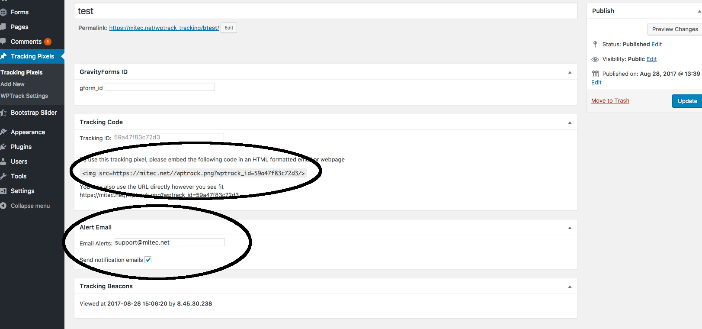

Created: 8/28/2017
By: Mitec Solutions
Email: web@mitec.net
Thank you for purchasing Mitec's Tracking Pixel Plugin for wordpress. If you have any questions that are beyond the scope of this help file, please feel free to email via our contact form here. Thanks so much!
Installation of this plugin is simple, and similar to other Wordpress Plugins. Simply download the .zip file, and navigate to the wordpress plugins page. Click "Add New" at the top, then click "Upload Plugin" and select the zip file from the browse files button.
Once installed, you must activate it from the plugins page by clicking "activate".
This plugin requires that you have HTTPS enabled on your website, and that you have a valid security certificate. Most browsers will refuse to load insecure content inside of email, so the tracking pixel will not work if you do not have HTTPS and a valid SSL Certificate.
Please see this wordpress article for more details on installing plugins manually: Manual Plugin Installation
This plugin has full integration with Gravity forms and can attach a tracking pixel to the notifications sent out after form submission.
To use this feature, you must have Gravity Forms installed and activated.
After the plugin is installed and activated, each Gravity Form will have a new settings menu option called "WP Track" that will allow you to choose which notifications should have tracking pixels created and attached to them. Simply check the box to enable tracking, and then check the boxes for the forms you'd like to enable tracking on.
After tracking has been enabled on the notification, new submissions to the form will automatically have a tracking pixel created and appended to the notification email. Each time the email is viewed, the view will be logged in the entry for the form. Navigate to forms -> entries, and then click on an entry to find the "WP Track" box which contains the view tracking data, including the visitors ip address in addition to the date and time of viewing..
This plugin can also work on it's own without any additional plugins. Once the plugin is installed and activated, a new menu item called "Tracking Pixels" will appear. To create a tracking pixel, simply click on tracking pixels, and then click the "add new" button at the top of the page. Give the pixel a name, and click save.
After saving the pixel, you will receive the image tag which you can embed in any website or email.
You can enable email alerts to receive an email whenever the pixel is viewed by checking the box labeled "Send notification emails" and filling out the email address that you'd like to send notifications to. This will send an email each time the pixel is viewed which contains the ip address of the user viewing it, and the name of the tracking pixel.
Once again, thank you so much for purchasing this plugin. As we mentioned at the beginning, We'd be glad to help you if you have any questions relating to this plugin. No guarantees, but we'll do my best to assist. If you have a more general question relating to the plugins on CodeCanyon, you might consider visiting the forums and asking your question in the "Item Discussion" section.
Mitec Solutions